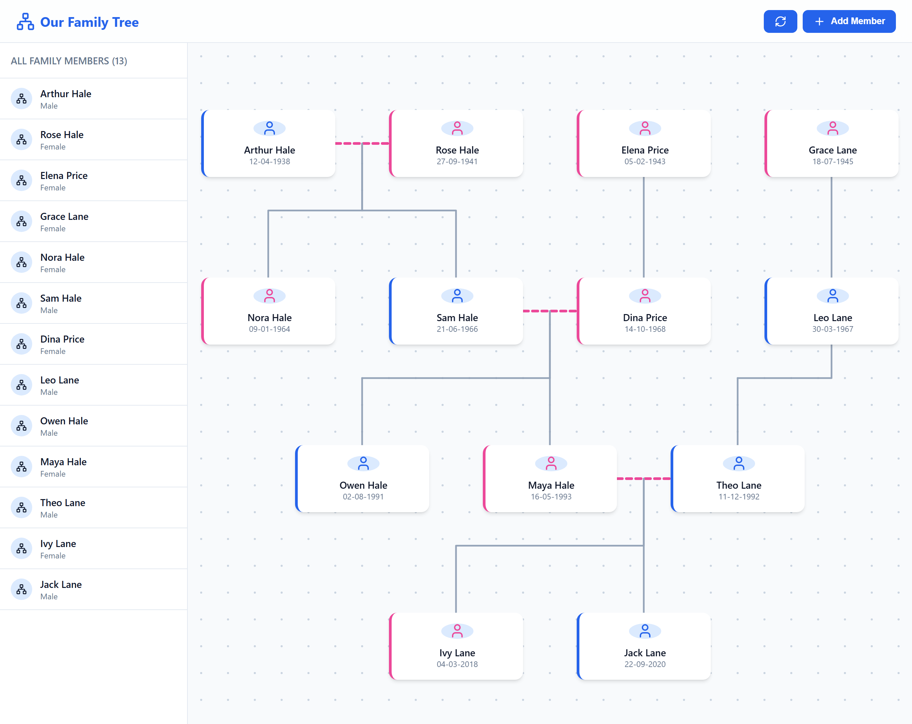

| Name | Parents | Married to | Born |
|---|---|---|---|
| Arthur Hale | Rose | 1938 | |
| Sam Hale | Arthur + Rose | Dina (see tab 2) | 21/6/66 |
| Nora | Arthur? | 1964 | |
| Maya Hale | Sam, Dina | Theo | 16-05-1993 |
| Theo Lane | Leo (tab 3) | Maya | ?? |
| Ivy | Maya & Theo | 2018 | |
| Jack | same as Ivy | 2020 | |
| Owen Hale | Sam/Dina | ask Nora |
